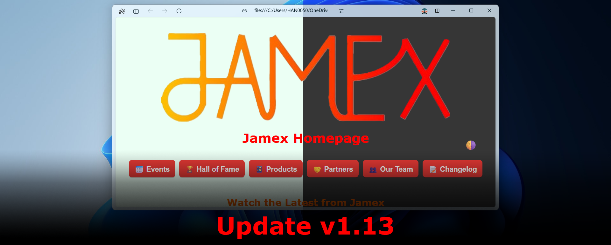
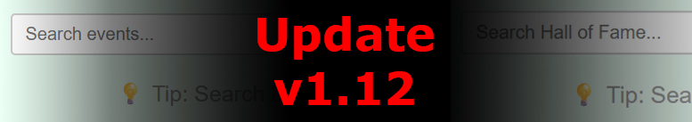
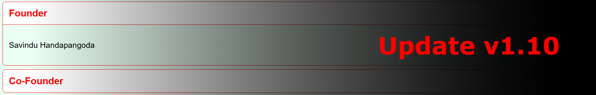
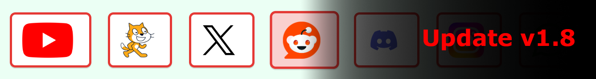
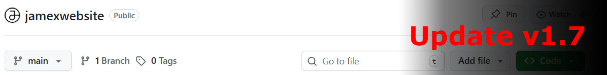
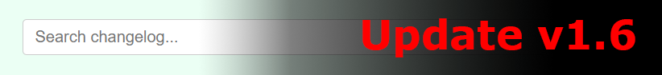

This update adds a new Jamex Account, allowing users to log in with a username and password, and react and comment to posts. We have also created a Featurebase board, where you can submit bug reports and feature requests, see progress on requested features, view updates, and more!
To log in, you will be required to create a username and password. The username will be shown on your comments, while your password is kept private and is used to verify the user.
This Changelog page will no longer be updated, and is being transformed into a new Feedback page. Instead, find the new Changelog page on our Featurebase. This will allow for future customisability, easier access, update notifications and better management. To acknowledge the hard work put into this Changelog page, we have implemented the like and comment features here as well. Tell us all about how your favourite update changed the way you used our website. ❤️
Added a new "Log in" button in the top right
Created two fields: username, shown on comments; and password, which is private
Log in button will be red on hover, and green when signed in.
Comments show up below the post, and can be hidden by clicking on the comment button.
Clicking on the username button in the top right when logged in will present the user with the option to sign out
Added compatibility with popular password managers, such as Proton Pass
Added an option to delete comments
Added a "My Activity" section, accessed by clicking on the username button, showcasing all of the user's comments and likes
Ensured the comment and like count is consistent between devices
Added a link to the Featurebase in the footer of every page
Added four stripes in Jamex colours in the footer of every page, with the footer text in the bottom-most stripe
Thanks for visiting, and stay up to date on our new changelog!
#major
v1.17 - Dropdown Filters
3/4/2026
This update makes it easier than ever to filter changelog entries. Now, with the brand-new dropdown filter next to the search bar, you can easily select "Major" or "Minor" updates. Not only is this easier than the previous method, but it is also more reliable and does not highlight results that contain the terms "major" or "minor", only highlighting entries with those tags. (Note: the ability to filter by searching "#major" or "#minor" has not been removed for backward compatibility.)
Stopped text in tags on the News page from being highlighted during search
Implemented the dropdown filter for easier and more precise changelog entry filtering
Refined the dropdown filter to only search the entry tags and not the entry text
Thanks for visiting and stay tuned!
#minor
v1.16.1 - Minor Improvements
31/3/2026
This update adds some minor improvements and fixes some bugs across the website.
Changes the previous News articles announcing updates v1.14 and v1.15 to use the new Article Link feature
Publishes a News article about the new Chess.com Club
Thanks for visiting and stay tuned!
#major
v1.16 - Article Copy Link Button
30/3/2026
This update introduces a new "Copy Link" button on each article, allowing users to easily share specific articles with others without having to scroll past more recent ones.
Added the "Copy Link" button to each article
The button will be red on hover, and green when clicked
Thanks for visiting and stay tuned!
#major
v1.15 - Latest News Section
29/3/2026
This update adds a "Latest News" section to the homepage, showcasing our most recent news article for easy access and visibility.
Adds a "Latest News" section to the homepage, which shows the most recent news article with its image or video, title, and description.
Adjusts the tags and date, so that they are inline.
Un-italicises the date for better readability.
Clicking on the "Latest News" title will now take you to the news page.
Adds our date framework to the Events and Hall of Fame pages.
Shortened the height of the Discord embed on the Homepage to reduce scrolling.
Changes the "Other Socials" section to be collapsible to reduce scrolling.
Thanks for visiting and stay tuned!
#minor
v1.14.3 - News Page Image Update
28/3/2026
This update adds missing images and videos to the News page.
Adds a missing image to the latest News article.
Adds a missing video to the previous News article.
Adjusts wording of the latest News article.
Thanks for visiting and stay tuned!
#minor
v1.14.2 - Typo Fixes
28/3/2026
This update fixes some typos in the Changelog page.
Removed an unnecessary "< /p>" in the v1.13.2 changelog entry
Fixed the entry for v1.12.1 incorrectly labelled as v1.12.2
Fixed a grammar mistake in the v1.13 changelog entry, where an "a" was missing
Fixed a typo in the v1.11.2 changelog entry, where "adjusts" was incorrectly written as "udjusts"
Fixed a grammatical error in the v1.11 entry, where there was a "to" instead of an "of"
Removed an unnecessary comma in the v1.9 changelog entry
Refined the wording in the v1.8.2 changelog entry
Fixed the spelling in the v1.8 changelog entry, "centred" was incorrectly written as "centered"
Refined the wording in the v1.7.3 changelog entry, and fixed a typo where "concise" was incorrectly written as "consise"
Added a missing hyphen in the v1.7 changelog entry
Refined the wording and fixed some grammatical errors in the v1.6 changelog entry
Added a missing "the" in the v1.5.1 changelog entry
Fixed a typo where "centre" was incorrectly written as "center" in the v1.4 changelog entry
Thanks for visiting and stay tuned!
#minor
v1.14.1.1 - News Update
27/3/2026
This update adds a new post to our News page.
#minor
v1.14.1 - Homepage Updates
27/3/2026
This update changes some content in the homepage.
Replaces the NGV video with our latest YouTube video
Removes the outdated JLock Pro 2 promotion on the Homepage
Publishes a News article regarding the new YouTube video
Thanks for visiting and stay tuned!
#major
v1.14 - Jamex News Page
27/3/2026
This update introduces the News page, where you can keep track of updates, new product launches, new videos and announcements, and more, all in one place!
Adds a new News page to keep track of updates.
Adds search functionality to the News page.
Fixed a bug where the search tip would get displaced by the "No results" message
Copied and modified the tags from other pages, such as the Changelog page, to make the tags visible to the user on the News page, for easy filtering.
Changed the formatting of the tags to show them inside pill-shaped bubbles.
Brings the new date format from the News page to the Changelog page, and updates previous changelog entries to match the new format.
Thanks for visiting and stay tuned!
#minor
v1.13.3 - Hall of Fame Search Bug Fix
23/3/2026
This update again fixes the flashing in the Hall of Fame search, after it came back while implementing the automatic theme feature.
Thanks for visiting and stay tuned!
#minor
v1.13.2 - Auto Theme Improvements
21/3/2026
This update improves the experience of the Auto Theme feature by ensuring the theme will always switch to the opposite theme when changing away from the automatic theme.
When the system is in dark mode, clicking the theme button will switch from auto to light to dark to auto
When the system is in light mode, clicking the theme button will switch from auto to dark to light to auto
Thanks for visiting and stay tuned!
#minor
v1.13.1 - Aditya Arora's Promotion
18/3/2026
Aditya Arora has been promoted to the position of Manager, alongside Javen Chan.
Thanks for visiting and stay tuned!
#major
v1.13 - Automatic Theme
16/3/2026

This update introduces the Auto Theme, which automatically changes the website theme based on the system theme.
Built a new framework for the website to detect the device theme
Added a new "Auto" button in the top right for users to manually toggle the theme if needed
Thanks for visiting and stay tuned!
#minor
v1.12.1 - Events Overview Link Fix
16/3/2026
This update fixes the Events Overview Link not redirecting properly.
Thanks for visiting and stay tuned!
#major
v1.12 - Search Bars for Hall of Fame and Events
15/3/2026

The framework for the search bar from the Changelog page has been utilised and duplicated to the Events and Hall of Fame pages.
Added Harman Dhaliwal's achievement to the Hall of Fame
Added search bars to the Events and Hall of Fame pages
Added tips under the search bars in the Events and Hall of Fame pages
Rewrote our search framework to work correctly on pages with video files, and prevent flashing
Changed our search framework to ensure the tip would not get displaced by the "No results found" message
Thanks for visiting and stay tuned!
#minor
v1.11.3 - Hall of Fame Order Fix
13/3/2026
This update fixes the order of entries in the Hall of Fame section to keep entries in date order.
Moved Tao's Hall of Fame Entry down, and moved Ethan's Hall of Fame Entry up to keep the entries in the correct order
Thanks for visiting and stay tuned!
#minor
v1.11.2 - Social Embeds Repositioning
12/3/2026
This update adjusts the positioning of the main embeds (YouTube, X, Discord) for a cleaner look.
Added a new "X Hashtag" embed that allows users to quickly post on X with the #jamexwebsite hashtag
Rearranged the layout of the Social Embeds by stacking the YouTube and X embeds vertically
Thanks for visiting and stay tuned!
#major
v1.11 - Minor Improvements
10/3/2026
This update doesn't add any major new features, but provides many small improvements to all aspects of our website.
Added Labour Day to the Events Overview
Added NAPLAN to the Events Overview
Wrote a section describing NAPLAN in the Events page
Added a button to our Chess.com account
Changed the order of positions in the Our Team page to have "All Employees" before the Departments section
Duplicated the search framework onto the Events and Hall of Fame pages to prepare for full implementation in the future
Thanks for visiting and stay tuned!
#minor
v1.10.2 - Partners Refinement
9/3/2026
This update fixes the naming of the Partners page on the tab label, keeping consistency.
Thanks for visiting and stay tuned!
#minor
v1.10.1 - Application Form
9/3/2026
This update adds a form to apply for a job at Jamex to the Our Team page, and more.
Added a Google Form to apply for a job at Jamex to the Our Team page
Added a QR Code to the Google Form
Added a "All Employees" section to the Our Team page
Thanks for visiting and stay tuned!
#major
v1.10 - Our Team Page Launch
9/3/2026

This update brings the "Meet the Team" page from the old Google Sites version to our new website, as "Our Team".
Adds the "Our Team" page to the website
Creates a new framework for collapsible headings
Adds the positions for Founder, Co-Founder, CEO, Co-CEO and Manager to our site
Thanks for visiting and stay tuned!
#minor
v1.9.1 - Changelog Tags Fix
8/3/2026
This update fixes an issue where the previous update (v1.9) was incorrectly labelled as a minor update.
Thanks for visiting and stay tuned!
#major
v1.9 - Social Embeds
8/3/2026
This is a fix for the issue with the social buttons not working. We have added third-party embeds for better integration with our top socials.
Adds third-party embeds for YouTube, X, and Discord
Fixed the Social buttons not working for all other socials
Thanks for visiting and stay tuned!
#minor
v1.8.4 - Hall of Fame Formatting Fix
8/3/2026
This update fixes a formatting issue on the Hall of Fame due to changing the framework of the articles.
Thanks for visiting and stay tuned! P.S. We are aware of an issue with the Socials buttons, and are working on a fix.
#minor
v1.8.3 - Savindu's Hall of Fame Entry
8/3/2026
Savindu Handapangoda's achievement has been added to the Hall of Fame.
Thanks for visiting and stay tuned! P.S. We are aware of an issue with the Socials buttons, and are working on a fix.
#minor
v1.8.2 - Button to Spotify Account
7/3/2026
This update adds a button to our Spotify account in the Socials section, and some other small improvements.
Added a button to our Spotify account in the Socials section on the homepage
Added alt text for images in the buttons in the Socials section
Thanks for visiting and stay tuned!
#minor
v1.8.1 - Sponsors & Partners Refinement
6/3/2026
This is a small update that changes the name of Sponsors & Partners to just "Partners" for simplicity and consistency, and to support mobile optimisation.
Thanks for visiting and stay tuned!
#major
v1.8 - Social Buttons Upgrade
6/3/2026

We have delivered a major update to the Socials section on our homepage.
Created a new framework for the social buttons for greater customisability
Changed the background colour of the buttons from white to red
Enlarged and centred the social buttons
Removed the wording from the social buttons
Changed the background colour of the social buttons on hover from yellow to a light pink
Thanks for visiting and stay tuned!
#minor
v1.7.3 - Page Name Changes
6/3/2026
We have changed the names of most of our pages. This doesn't affect their visible title, but makes it simpler when entering a URL.
Changed "Index.html", "Events.html" and "Changelog.html" to be all lowercase, making it easier to navigate with a direct URL.
Changed "Apps_and_Other_Products.html", "Hall_of_Fame.html" and "Sponsors_and_Partners.html" to "products.html", "hall-of-fame.html" and "partners.html" respectively, adding shorter and more concise titles and keeping it in line with standard URL practices
Thanks for visiting and stay tuned!
#minor
v1.7.2 - Fix for Search Filter Tip
5/3/2026
This update fixes the formatting of the tip under the search bar.
Thanks for visiting and stay tuned!
v1.7.1 - Link to Source Code
5/3/2026
This update adds an easier way to find our source code, and fixes some other issues.
Added a link to find the source code in the footer of every page
Added a tip under the search bar for users to easily filter changelog entries
Removed an unnecessary break in the Socials section
Thanks for visiting and stay tuned!
#major
v1.7 - Move to GitHub
5/3/2026

We have moved our codebase to GitHub for better collaboration and version control. Our website is now open source! You can find the code at https://github.com/JamexCEO/jamex. We will no longer be updating our Netlify version, but we will continue to keep it up for as long as possible. You can continue to get updates at the all-new GitHub site: https://jamexceo.github.io/jamexwebsite (this version).
Thanks for visiting and stay tuned!
#minor
v1.6.1 - Search Improvements
4/3/2026
This is a small update to improve the search functionality on the Changelog page.
Added a "No results found" message when no changelog entries match the search query
Added highlighting for search results in both light and dark modes
Changed the border colour of the search bar to red
Changed the background colour of the search bar to white in dark mode
Adjusted positioning on our Sponsors & Partners page and fixed our image positioning framework
Thanks for visiting and stay tuned!
#major
v1.6 - Changelog Search
4/3/2026

We have created an all-new search bar that intelligently searches and filters changelog entries. You can search by version number, release date, or contents.
Created a new framework for the search bar, which can be added to other pages in the future
Added a search bar to the Changelog page for easy filtering
Thanks for visiting and stay tuned!
#minor
v1.5.2 - Images in Changelog
4/3/2026
This is a small update to add images to the Changelog page.
Added image support to major updates in the Changelog page to enhance visuals and provide distinction between major and minor updates
Thanks for visiting and stay tuned!
#minor
v1.5.1 - Dark Mode Refinements
3/3/2026
This update is all about refining the experience in dark mode, after a few bugs in the last update.
Fixed an issue with the table items not changing colour in dark mode
Changed "Events" to "Events Overview" to avoid confusion with the main Events page
Changed the colour of the "Events Overview" link in dark mode to be more visible
Adjusted the background colour of the website in dark mode
Thanks for visiting and stay tuned!
#major
v1.5 - Dark Mode
3/3/2026
We have introduced a dark mode toggle button to the top right of each page!
New dark mode toggle button at the top right of each page
Added frameworks for more image alignment settings (left, right, etc.)
Adjusted button, text and table appearance in dark mode
Added "- Jamex" to each page title for better multitasking and tab naming
Thanks for visiting and stay tuned!
#minor
v1.4.2 - Navigation Bar Issues
2/3/2026
This is a small fix for some issues with the navigation bar.
Fixed an issue where the current page was not being highlighted on the navigation bar
Thanks for visiting and stay tuned!
#minor
v1.4.1 - Video Alignment Fix
2/3/2026
This is a small fix for a video alignment issue.
Fixed video alignment issues on all pages
Thanks for visiting and stay tuned!
#major
v1.4 - Navigation Bar + more
2/3/2026
We have introduced a new navigation bar to the top of the website! As part of our transition to VS Code, we were able to make many more changes!
New navigation bar
Indication of current page on navigation bar through button colour
Indication of external links vs internal links through button colour
New framework to centre images on pages
New Changelog page to keep track of changes directly on our website